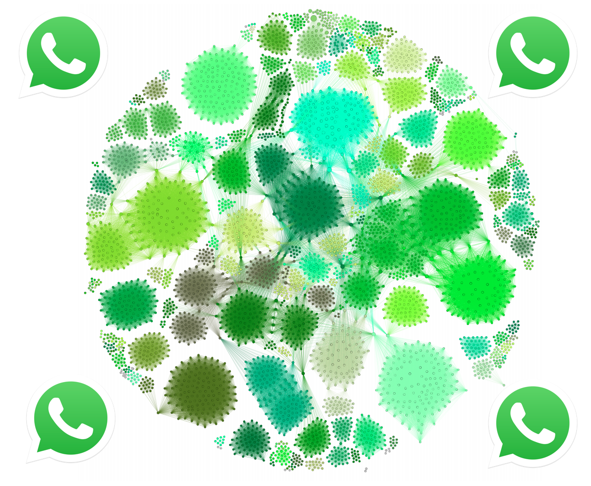

Tools for WhatsApp data collection
ICWSM 2019 Tutorial
Abstract
WhatsApp is the most popular communication application in many countries, including the US, UK, Germany and many developing countries such as Brazil, India, and Mexico (where many people use it as an interface to the web). Due to its encrypted and peer-to-peer nature, it is hard for researchers to study which content people share through WhatsApp at scale. Its relevance, however, means that it is important for researchers to study its growth, usage and impact.
In an attempt to support the research community, this tutorial will present tools and methodologies for collecting WhatsApp public group data. It will be separated into two parts. In the first part, we will present tools and underlying techniques for collecting data from public WhatsApp groups. In the second part, we will showcase some of our recent research using WhatsApp data and introduce our system, WhatsApp Monitor, a web-based system that helps researchers and journalists to explore the nature of content shared on WhatsApp. Our tool monitors multiple content categories such as images, videos, audio, and textual messages posted on a set of WhatsApp groups and displays the most shared content per day.
The tutorial covers practical as well as analytical techniques for obtaining and exploring WhatsApp data. The goal will be to train researchers and other interested parties in how they can collect and analyze WhatsApp group data within the context of their own studies.
Organizers
Kiran Garimella

Kiran Garimella is a postdoc at MIT. Prior to joining MIT, he was a postdoc at EPFL. He finished his PhD at Aalto University. His research focuses on identifying and combating filter bubbles on social media. Previously he worked as a Research Engineer at Yahoo Research, QCRI and as an Research Intern at LinkedIn and Amazon. His research on reducing polarization on social media received the best student paper awards at WSDM and WebScience 2017.
Twitter: @gvrkiran, Email: garimell at mit dot edu
Philipe Melo

Philipe is a PhD student at UFMG, Brazil. His previous research was about methods of sentiment analysis and is currently studying fake news on social networks.
Website: here
Gareth Tyson

Gareth Tyson(@gareth_tyson) is a Lecturer at Queen Mary University of London, and a Fellow at the Alan Turing Institute. His research focuses on understanding illegal, illicit and unusual activities in social media, and networked systems. His work has received coverage from news outlets such as MIT Tech Review, Washington Post, Slashdot, BBC, The Times, Daily Mail, Wired, Science Daily, Ars Technica, The Independent, Business Insider and The Register. He also serves as a reviewer and program committee member for a number of prominent conferences/journals such as IEEE/ACM ToN, IEEE ICDCS, ACM CoNEXT, and ICWSM. He was nominated for the Best Paper Award at the Web Conference 2018 (best paper in track), his recent INFOCOM paper won the Best Presentation, and he has twice been awarded the Outstanding Programme Committee Member Award from ICWSM (2016 and 2018). Website:http://www.eecs.qmul.ac.uk/~tysong/
Twitter: @gareth_tyson
Jussara Almeida

Jussara M. Almeida is an Associate Professor in the Computer Science Department at UFMG and was an Affiliated Member of the Brazilian Academy of Sciences from 2011 to 2015. She is the leader of the Social Computing Lab at UFMG. Her research is focused around understanding how users interact with different applications, characterizing and modeling the workload patterns that emerge from such interactions, and exploiting those patterns to enhance current applications and services on the Web.
Website: here
Fabricio Benevenuto

Fabricio Benevenuto(@fbenevenuto) is an Associate Professor in the Computer Science Department of Federal University at Minas Gerais (UFMG). Fabricio was an affiliated member of the Brazilian Academy of Science and, recently, he was visiting faculty at MPI-SWS, Germany (2017-2018), through a fellowship from Humboldt Foundation. Currently, Fabricio is the leads the social computing Lab at UFMG and his research interests are focused on unveiling misinformation campaigns in social media.
Twitter: @fbenevenuto
Go to top